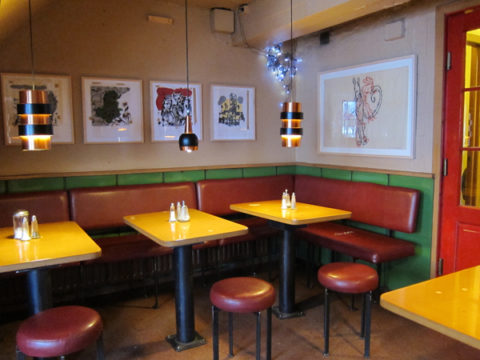
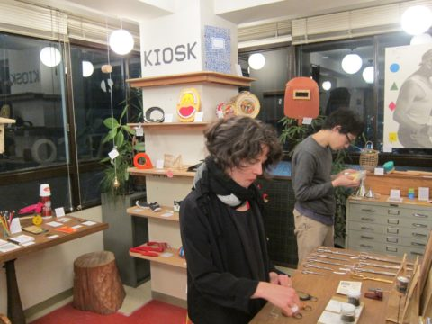
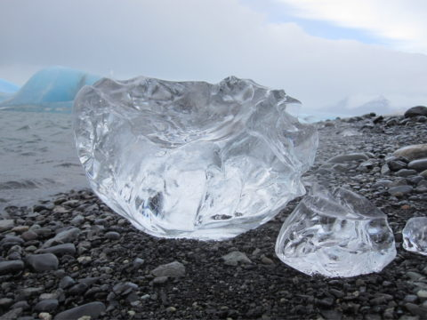
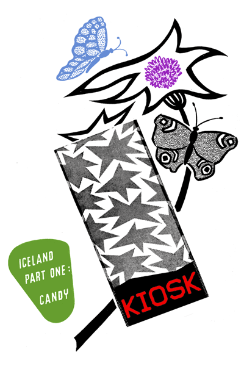
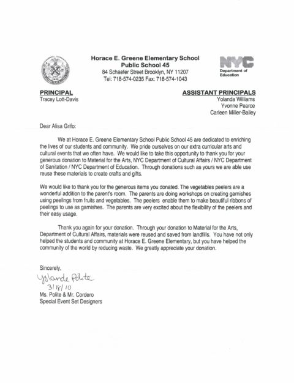
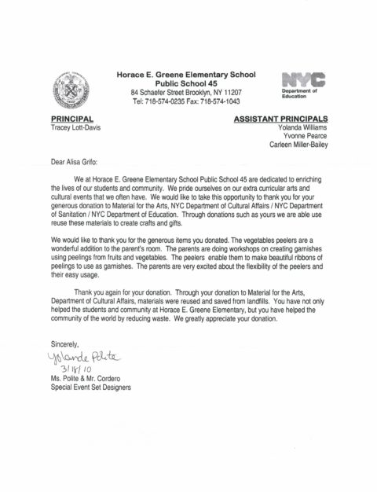

May 29, 2010 by Ming
On the first of May, Swedes celebrate Valborg – the coming of spring – by starting bright and early with champagne for breakfast. As the festivities commence, things just get sillier, but at dusk the Majbål brings a romantic, and rather dramatic, close to the day’s folly.
 ours consisted of last year’s Christmas trees which emitted the rich scent of burning pine. A good way to start the season.
ours consisted of last year’s Christmas trees which emitted the rich scent of burning pine. A good way to start the season.

In: festivities, seasons, Sweden
- Comments closed
May 28, 2010 by Ming
But I am forgetting to mention the best thing about traveling with Kiosk – do you know what this is? 
It may look like a box of slippery black snakes, but it’s actually a tangle of moist Icelandic black licorice, so fresh you could smell it through the plastic. This is what was waiting for me in the back seat of the car when I joined Alisa and Jason for the Nordic adventure!

In: adventures, candy, Iceland
- Comments closed
May 27, 2010 by Ming
and Grai Kotturinn, Iceland has also brought us the pleasure of eating pylsur (hotdogs) out of neat packages featuring hot dog boyfriend and girlfriend in a sweet embrace. 
They seem to be in the habit of personifying what is, perhaps surprisingly for those who have never visited, considered their national food. Climbing glaciers and bathing in hot springs can be tiring stuff, and a famished explorer in Iceland might do just anything to get a bite to eat. And there’s not much else out there in the wilderness which bares an uncanny resemblance to the moon. 
Pylsursinnep (hot dog mustard)features a hot dog in a hurry- to get to the next companion in need of a bit of spice.

In: eats, Iceland, landscapes, mustard
- Comments closed
May 21, 2010 by mimecine
I just came across this slideshow from NYT, which I’m sure many of you might have seen already, but if you haven’t, it’s well worth reading. Ehh, just roll with it. Remember that next time!
In: tips, travel
- Comments closed
May 17, 2010 by mimecine

Going to Iceland anytime soon? I wish I was! If you do find yourself in Reykjavik some early morning, try our favorite breakfast spot, Grai Kotturinn, a perfectly small cafe owned by artist Hulda Hákon. The atmosphere is very relaxing, with shelves of old art books, kind folk behind the counter, and try their pancakes with cheese and jam, or even their bagel(!) with smoked salmon… very very satisfying. Look for the grey cat on the door. Open early. I can’t wait to go back.
Grai Kotturinn
Hverfisgötu 16a
101 Reykjavik
In: Iceland, reykjavik
- Comments closed
April 21, 2010 by mimecine
We are having an opening in Tokyo tomorrow and we hope you will join us if you are here! The nice people at Postalco have invited us and we will visit them until June 25th. Not bad! Although we have to go back to New York before then, boo hoo.
Location:
2-2-18 4fl
Kyobashi Chuoh
Tokyo
Party Opening Time: from 6 -8
Normal Shop Hours: Wed, Thurs, Fri 12- 7 & Sat 12-6
In: japan, Tokyo
- Comments closed
April 19, 2010 by mimecine
Surprise! kate spade new york unwrapped one of the Surprise Balls and found a whole load of useful items in there. And they made a very nice video of it too! I must confess that I haven’t unwrapped my own personal one yet – I think I’ll save it for another week, it’s a perfect birthday present to let myself unwrap it… If you, like me, have one at home and wonder curiously how it is to wake it up, wonder no more. Now in these volcanic times, I’d liken it to a little eruption of pure happiness. I’m excited!
Send us more reports of your unwrapping!
In: colors, happiness, report
- Comments closed
April 12, 2010 by mimecine

Not all news is bad news for Iceland today. A little consolation for their mess of an economy that the people did not bring on themselves, we are throwing a little party for the candy from that remarkable island. Come tonight (that’s Monday April 12:th if you read this late), share a beer and watch some volcano movies!
The candy found it’s way into the nature in our store too. You might not like the images as much as I had fun doing them, but that’s your loss! We have spoken to some icelandic dentists and they said as long as the candy is found in natural surroundings it’s absolutely fine. You don’t even need to brush your teeth! I admit my Icelandic has something to ask for, but I got the gist of what they said, so just trust me!
Kaboom tonite!
- Comments closed
April 8, 2010 by mimecine
Iceland needs some help right now so we went. We went to Iceland and possibly we should have never come back. It’s all about volcanos. A current eruption in the south of the country, a paper mache volcano made here at KIOSK for the show, volcano movies being screened and a candy called “Hraun” or “Lava”. All good things come in stages and for ICELAND we take it in two parts. Part one being Icelandic Candy, a special breed of it’s own that we have worshiped for years, consisting of licorice, chocolate and caramel alone and in various combination’s, most of which you never thought could have existed. ICELAND is a fantastic place, with fantastic people with fantastic ideas. Really, their candy sums it up. We decided to chose candy as it’s fun and easy and right now I think we all need a bit of easy fun.
Volcanos,eruptions, eitt sett, explosions, glaciers, thristur, hraun, aedi, sambo…
Online any day now. Welcome for an early beer at KIOSK on Monday April 12th from 6 – 8 pm.
Card compliments of Jason Rosenberg who joined KIOSK on the trip.
In: Iceland
- Comments closed
March 26, 2010 by mimecine
Sometimes at KIOSK we receive the wrong goods, lightly damaged goods, etc. It can be a pretty big bummer when you are working on a tight budget. BUT to turn a negative into a positive we DONATED the goods to Materials for the Arts. 110% rewarding. Excellent. I urge everyone to DONATE , forget about reselling on Ebay, GIVE to a charity or a cause you support. Love these letters… 

- Comments closed